01
治疗室 · 支票
她问支票到了吗，他说已经存好了。
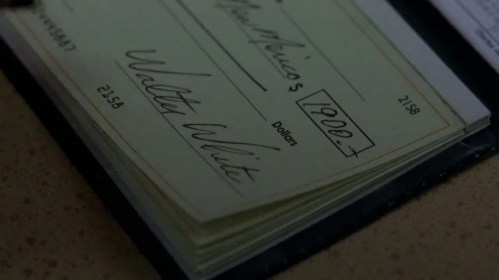
剧情事实沃尔特接受治疗，向妻子谎称埃利奥特的钱已到账，随后请求诊所晚些兑现自己的支票。 [1][2]
这一场为什么重要 · 个人解读
一句“已经处理好”遮住了实际的资金缺口。治疗确实开始，家庭对治疗来源的理解却建立在另一个版本上。经济压力因此没有成为共同讨论，而被他私自接到制毒收入的时间表上。
因此 →对现金的急迫，随后被带进与杰西的分成争执。
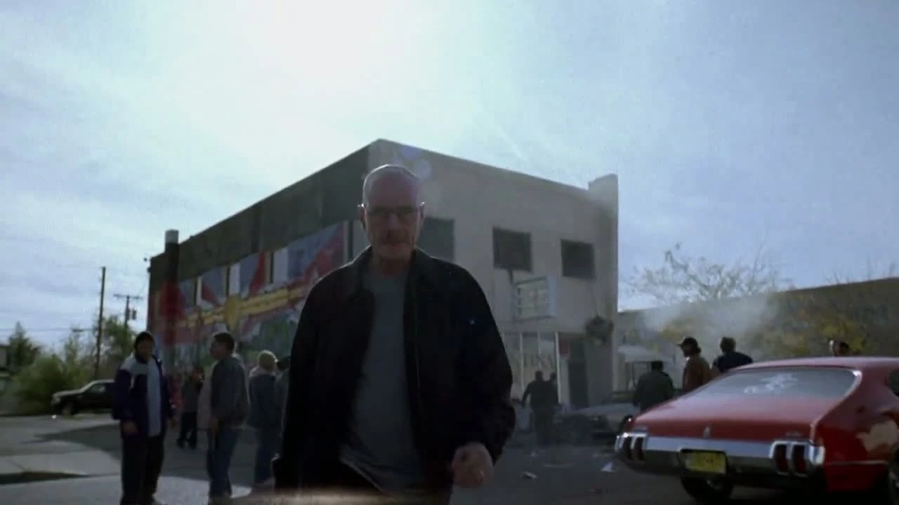
他终于让人害怕，
就能让事情安全了吗？
一张支票，一个被捕的清洁工，一次危险的交涉。
他讨回了钱，也把生意推向更深处。
剧透边界 剧透截至 S01E06，包含本集结尾
12 个剧情节点 · 8 位人物 · 04 组冲突沃尔特想把工作划得干净：自己只负责技术，杰西处理客户，不再流血。可治疗需要钱，零售无法满足他的预期，学校器材又成了调查线索。第六集把身体、劳动与暴力带到同一条因果链上，让海森堡的出现既有令人兴奋的力量，也有被这份力量遮住的代价。
读这一集，跟住三条线被轻视的劳动 / 转移的代价 / 有效与安全
剧情事实开场中沃尔特要求由自己负责制作、杰西负责销售，表示不想接触客户，并强调不再流血。 [2]
个人解读这种分工不只是效率安排，也是他维护自我形象的方法：似乎只要自己做的是熟悉的技术，其他部分便能保持距离。随后发生的一切，将检验这种距离是否真的存在。
本页只使用截至 S01E06 已揭示的信息；下文包含本集结尾。
依照本集事件推进分为三幕；药物、爆炸与制作过程只作为剧情背景，不复现操作方法。
只做化学，不等于后果只属于化学。

剧情事实沃尔特接受治疗，向妻子谎称埃利奥特的钱已到账，随后请求诊所晚些兑现自己的支票。 [1][2]
一句“已经处理好”遮住了实际的资金缺口。治疗确实开始，家庭对治疗来源的理解却建立在另一个版本上。经济压力因此没有成为共同讨论，而被他私自接到制毒收入的时间表上。
因此 →对现金的急迫，随后被带进与杰西的分成争执。
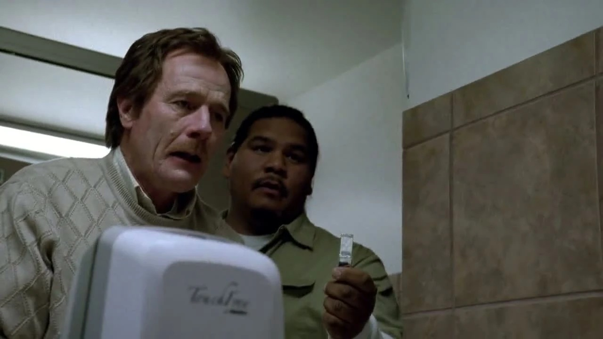
剧情事实沃尔特因治疗反应在学校呕吐，清洁工雨果帮他处理现场，让他安心回去上课，并递上口香糖。 [1][2]
照料没有豪言壮语，只是替一个难堪的人留住体面。这份小善意使后面雨果遭遇调查时不再只是“出现了一个倒霉配角”。他已经与沃尔特建立过一种对等、朴素的同事关系。
因此 →当调查追到学校，这份关系会面对一场没有被还回去的责任。
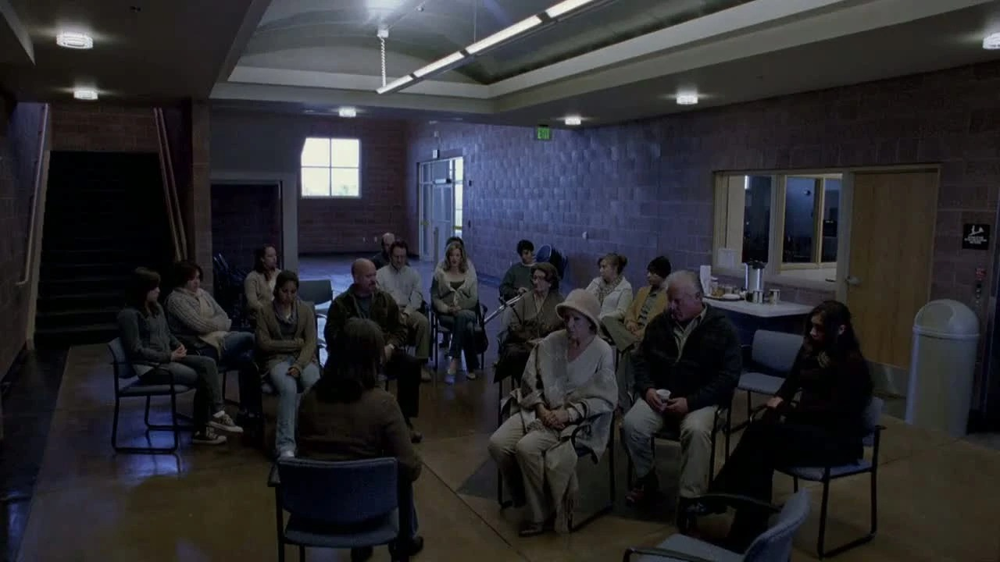
剧情事实斯凯勒和儿子追问他为什么常常不在，沃尔特说自己喜欢独处、散步，欣赏自然会让他感觉好一些。 [1][2]
独处需求本身并不虚假，也不应被自动病理化；问题在于它在这里被拿来遮住实际去向。他借一个可以被理解的感受，包装一段不能被家人知晓的活动。会谈形式越温和，谎言就越容易显得可信。
因此 →家庭以为开始理解了他，真正知情的人仍在另一辆车里。
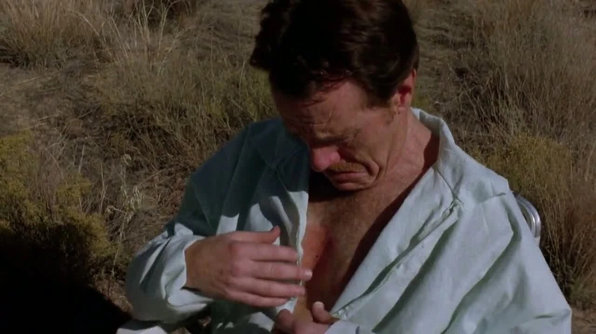
剧情事实沃尔特身体不适，杰西从治疗标记判断他患癌，谈起自己姨妈的经历，质问为何不告诉自己，并接手剩下的工作。 [1][2]
这是一次由照料打开的理解。杰西并非突然获得医学权威，而是从亲人经历认出熟悉的迹象。他强调“我是你的搭档”，要求的不只是知道秘密，更是不要让自己在不知道风险的情况下替他工作。
因此 →短暂的相互理解，很快又被收入与劳动分配打断。
身体开始承受治疗，家人仍被隐瞒。杰西从照料关系里认出病情，合作因此短暂出现新的理解。
销售不是一个可以凭意志跳过的环节。
剧情事实杰西交出零售所得，沃尔特嫌回报太低，要求直接卖给经销者。杰西解释销售的劳动、介绍人的必要和图科的危险，仍被催促拿出胆量。 [1][2]
沃尔特计算的是违法风险与回报，杰西承受的是街头一份份交易的时间和危险。把阻力称为缺乏动力，既抹去劳动，也让实际警告变成性格弱点。这使“只负责技术”的边界开始暴露其便利：他能要求结果，却不必先看见过程。
因此 →杰西去寻找更大的买家，风险随之升级。
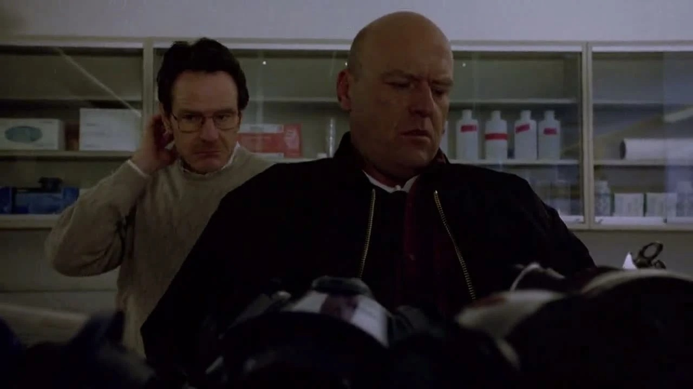
剧情事实汉克追查面罩上的学校标记，核对库房器材，发现缺少面罩和实验器皿。杰西此时来电，说已通过瘦皮特联系上图科。 [1][2]
两条压力线被放进同一个空间：执法者在眼前清点，搭档在电话里宣布升级。沃尔特靠着老师与亲属的身份应对，汉克也依照熟悉的形象理解他。知识提供犯罪能力，身份则暂时提供躲避怀疑的便利。
因此 →调查转向有接触权限的人，交易也走到了图科面前。
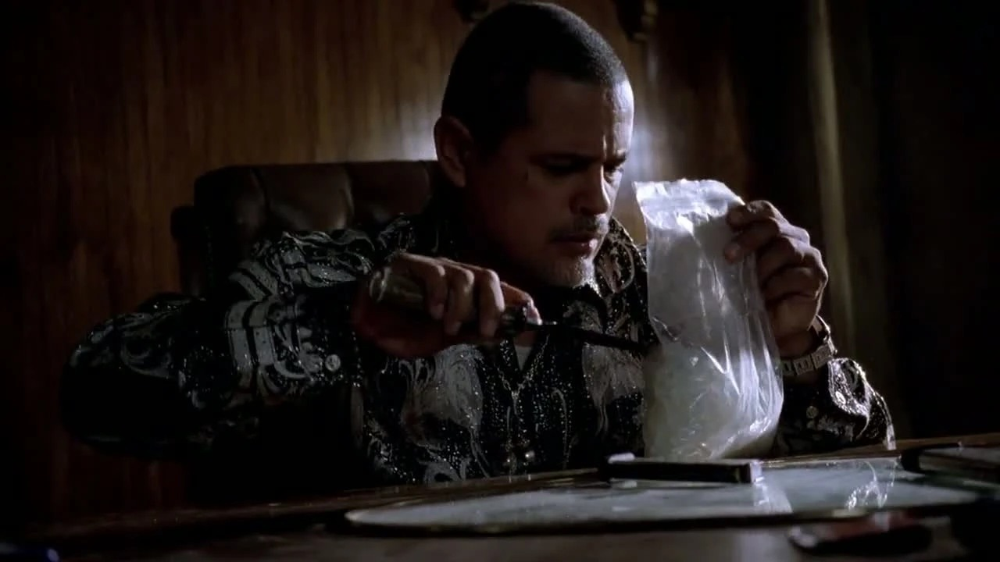
剧情事实瘦皮特引荐杰西。图科认可成品，却要拿走货再付款；杰西要求现金或拿回制品时，图科将他打成重伤。 [1][2]
在这里，“好产品会带来好生意”的预设被暴力打断。图科既是买家，也是能够单方面规定怎样付款的人。杰西之前关于风险和关系的判断被实际验证，代价却由他的身体支付。
因此 →他住进医院，沃尔特还不知道交易的实际结果。
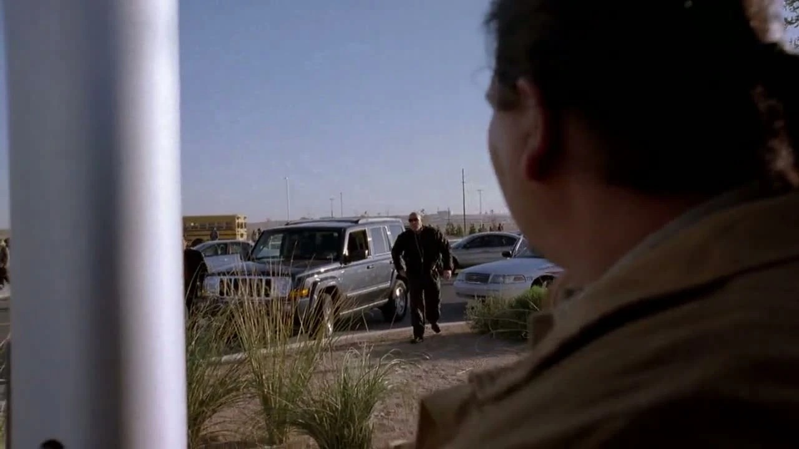
剧情事实雨果因有接触器材的权限与既往记录受到怀疑；警方在车里发现大麻，将他逮捕。沃尔特从校内看见。 [1][2]
必须区分两件事：雨果确有持有大麻的问题，后来调查也没有认定他偷器材。罪名、怀疑与失业的连锁，不该被写成全盘同一回事。沃尔特的沉默则很具体：接受过照料的人，选择保住自己的秘密。
因此 →牌桌上的讨论将告诉家人，雨果并不是器材窃贼。
零售瓶颈、调查线索与更大买家一起逼近。想把风险外包的沃尔特，正在推动搭档走向风险更大的地方。
讨回损失之后，他选择继续。
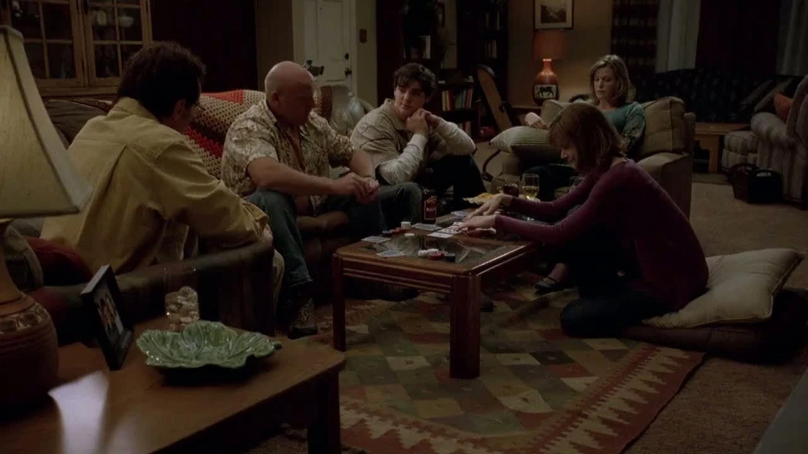
剧情事实汉克说雨果不是器材窃贼，却仍可能失去工作并因持有问题承担后果。牌局中沃尔特靠诈唬使汉克弃牌，实际上手里并无好牌。 [1][2]
轻松的游戏同时演示着真实关系：汉克很相信自己的识人能力，却不相信温和老师敢于做出危险的事。空牌诈唬让沃尔特获得一次小胜，也为稍后以威胁争取主动的场面建立动作上的呼应。
因此 →他开始更相信，别人对自己的判断可以被利用。
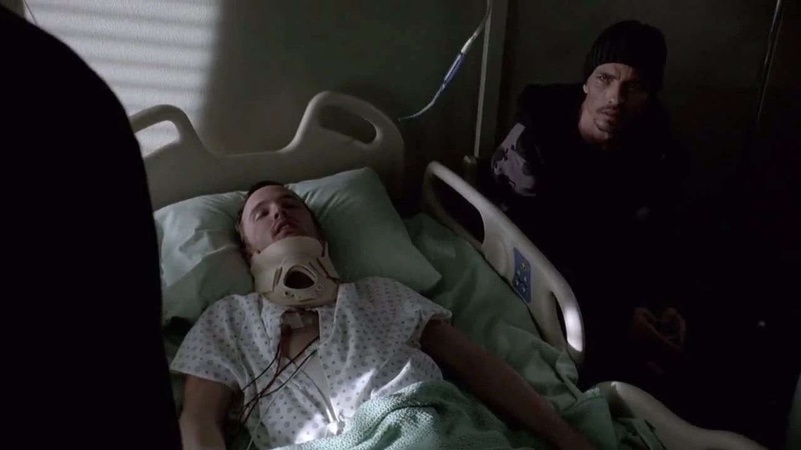
剧情事实沃尔特得知杰西住院，前往探视，从瘦皮特口中了解殴打经过，并问出图科的情况。 [1][2]
探望让他的愤怒有了明确对象，也使结尾的赔偿要求包含真实的照顾。这一点不必抹去；同样不能忘记，是他此前催促搭档进入更大交易。关心受伤的人，与面对自己在链条中的作用，需要同时发生。
因此 →他不再只做不见客户的技术一端，而准备亲自交涉。
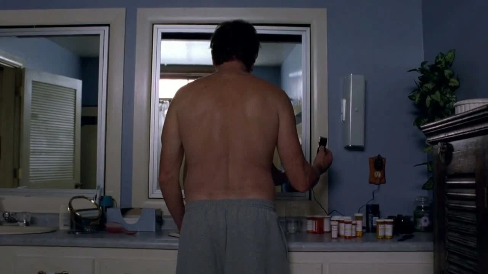
剧情事实面对治疗带来的脱发，沃尔特主动剃头。小沃尔特看到新样子，觉得父亲显得很酷。 [1][2]
外观有一层对疾病的主动回应，也被接到更强硬的新身份上。儿子看见的是父亲似乎重新振作，观众随后会看见他把这份姿态带到哪里。形象的力量来自这种距离，而不是一个发型自动使人改变道德。
因此 →他以新的名字进入图科的据点。
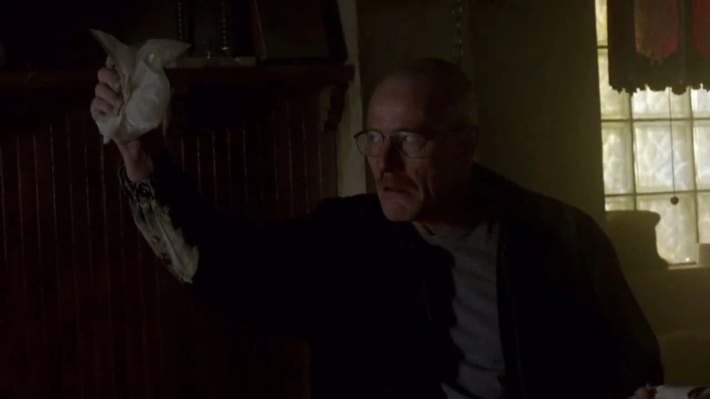
剧情事实沃尔特自称海森堡，要求归还货款并赔偿杰西。危险物造成爆炸后，图科付款，双方约定继续交易；沃尔特又提出更高的供货量。 [1][2]
威慑确实奏效，受伤搭档也得到赔偿。但他没有把结果用于退出，而是把一次报复转成新的生意。结尾的兴奋与供货数字并排出现：他不仅发现自己能让人害怕，也主动承诺让自己更深地留下。
因此 →一场看似抢回尊严的胜利，成为下一集必须兑现的压力。
牌局、医院与新身份把欺骗和威慑连起来。结尾的兴奋真实存在，更大的供货承诺也同样真实。
八位人物串起家庭、学校与市场。点击阶段和头像，区分谁提供照料、谁承受危险、谁仍不了解全部事实。
他声称不要暴力，家庭、同事和搭档分别试图照顾他。
病人 / 制毒者 / 海森堡
取得足以覆盖风险的收入，并让自己在交易中不再被轻视。
化学知识、欺骗能力与逐渐敢于采取的危险行动。
开始治疗，隐瞒资金与去向，催促杰西找大买家，最后以海森堡之名威胁图科并达成新供货约定。
他确实替受伤搭档讨回钱，也选择把一次暴力胁迫改写成继续经营的关系。行动的勇气与风险的扩大同时发生。
声称只做技术、不要流血，继续向家人隐瞒。
四组冲突分别看搭档劳动、雨果的代价、与图科的权力交易，以及自我界限如何被改写。
沃尔特懂得制品怎样得到高质量，却低估了找到买家、获得信任、控制付款与避免被抢的过程。他嫌回报太低时，杰西已经整夜在街头卖货。
质疑收益可以成立，但用胆量羞辱来回应具体风险，会使搭档更难坚持自己的判断。杰西后来受伤，让此前被轻视的经验变成了证据；补偿他并不能让这段因果关系自动消失。
个人解读：技术优势与经营判断分开评价，不把任何一种知识视为全局掌控。
把短句放回发生的场景。对白不是人物全部动机的证明，也可能是他选择让别人听见的那一部分。
No violence.不要暴力。中文自译
开场约定由他负责制作、杰西负责销售，并强调不要再流血；图片为后段交涉后的对照。
这句话提出的是他想保有的边界。随后必须检验的，是工作分开是否真的能隔离风险，以及他自己在得到权力时还会不会守住它。
英文据本集对白转录核对，共 7 个词；中文为本页自译。图片用于提示人物与场景，具体镜头边界见图注。
物件、空间和声音怎样让人物的变化变得可见。以下为画面观察与个人解读。
他称援助到账，又请求延迟兑现。个人解读：两个时间安排之间的缝隙，显示经济真相被他独自承担并隐瞒。
回到相关场景 ↗杰西从亲人经历认出痕迹。个人解读：身体绕过了沃尔特编排的说法，让搭档先得到一次真实信息。
回到相关场景 ↗遗落物把荒漠接回教室。个人解读：再熟悉的身份也会留下物证，分开的空间并没有分开因果。
回到相关场景 ↗牌局的诈唬让汉克退让。个人解读：它预演了别人以为知道他的底牌、实际仍被形象欺骗的关系。
回到相关场景 ↗剃头回应身体变化，新名字回应他人的目光。个人解读：两种主动塑形联在一起，却不能代替对实际行为的评价。
回到相关场景 ↗他确实体验到胜利。个人解读：画面的快感越强，越需要同时记住更高供货量已经成为接下来必须偿付的承诺。
回到相关场景 ↗第六集可以让人感到痛快，也必须留下未被快感解决的问题：雨果失去的工作、杰西承受的殴打，以及家人继续不知道的真相。
沃尔特确实展现了勇气和照顾搭档的一面，也主动选择继续交易、加大供货。有效的威慑没有使整个环境安全，只让他更相信自己能继续往前。
回看讨回钱后的另一个决定 ↗剧透截至第一季第6集，包含本集结尾。不涉及后续集数或其他作品的揭示。 · 本篇止于此，不预告后续情节。